Mar – Nov 2025
Ever Green Timber: Reshaping a traditional timber business with a new digital experience, from warehouse to showroom
Project Overview
Outcome
The timber business had long relied on manual processes, scattered information and no data foundation. We introduced a clearer information architecture and an AI recognition flow, fully digitizing warehouse intake, product categorization and the customer-facing site. After launch, we co-hosted a showcase with Google, demonstrating AI recognition and the improved front- and back-office workflows, and showing the client the concrete benefits of a measured, digital process.
Through live AI demos and platform walkthroughs, we helped the industry see the value of going data-driven — faster intake decisions, more consistent categorization, and traceable workflows. On the day, three other companies in the industry approached us about working together, opening the door to rolling the system out to other companies and growing the business model.
Role & Output
I worked closely with three engineers, a product owner and the client, owning the full UI/UX process — from clarifying problems, reshaping user flows, and aligning timelines and implementation with engineering to final UI design and handoff. Throughout, I communicated with the client to make sure features matched how work actually happens on site.
Challenge
The hardest part was the sheer volume of data and long-established work habits. We had to keep information clear and easy to use while accounting for an older user base, and help the client and staff adopt new ways of working — so the system didn’t just launch, but truly became part of daily operations.
Team Goal
We set out to help a traditional timber business rethink its online and offline experience, using digital tools to make communication between the business and its customers more efficient. We also restructured the product architecture so current features run reliably, with room to grow and adapt in the future.
Background
As digitalization accelerates and young people seek more flexible work, many traditional industries in Taiwan struggle to find successors, and their skills and value are increasingly overlooked.
Ever Green’s team is made up mostly of senior, older employees working alongside young migrant workers to handle daily imports and exports. They came to us to simplify complex processes and bring paper-based, offline work into a digital system — reducing manual work and errors, shortening onboarding for new staff, and helping a traditional business move beyond old processes and into the digital age.
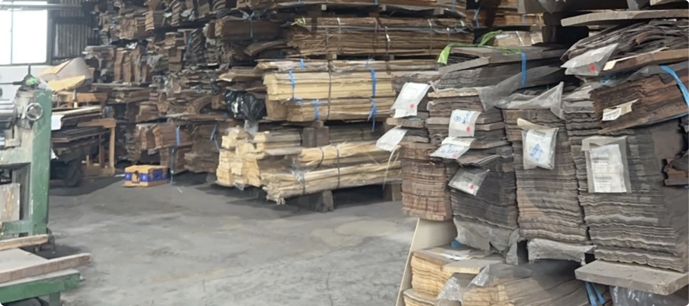
Design Process
- Requirements
Through in-depth interviews with the client, we mapped the real difficulties and bottlenecks in daily timber operations.
- Logic & Structure
Users’ learning curve and the habits of different roles became the foundation for the design direction.
- Wireframing
We proposed several possible solutions and built first-round wireframes to confirm direction with the client, making sure the design could actually be delivered.
- UI Design
Designed warehouse intake primarily for mobile web, so on-site staff can recognize and register products just by taking a photo — lowering the barrier for older employees and migrant workers.
- Design system
Built a systematic component library with a neutral, timeless visual style to keep the front and back office consistent and easier to maintain as features grow.
- Delivery
Over four months, we aligned requirements and priorities with engineering in weekly scrum meetings, adapting the design to the limits of existing UI libraries.
Current State & Define
We found that Ever Green’s existing website had an unclear hierarchy and categorization, and some images and content were easy to misread, hurting communication with customers. Since most customers learn about products only through the website, messy categories created misunderstandings and wrong expectations, affecting both experience and trust.
The client wanted more than a visual refresh — they wanted to rework the entire workflow and genuinely improve daily efficiency. So we broke down use scenarios, re-examined how the front end and back office interact, and worked through problems layer by layer with the client, validating issues in information structure and workflow.

Defining the Problems
1. A messy information architecture causes misunderstanding
Products and customer information lacked a clear hierarchy and categorization logic, making it hard for users to build a complete picture. Without knowing timber names, they couldn’t find products — so new customers got stuck at the very first step.
2. Over-reliance on manual work hurts efficiency and reliability
Back-office work depended heavily on manual handling, especially for intake and daily tasks, with little process support. Further interviews showed that migrant workers had trouble understanding the existing system, which also limited opportunities for optimization and automation.
3. Aging organization and systems limit new processes
Within the existing organization and systems, work still relied heavily on established habits, and the platform’s own constraints further limited how flexibly and efficiently things could change.

Click an image to enlarge
Design Approach
We combined existing workflows, the client’s pain points and competitor research to help the team focus on the right problems. Once technical and schedule feasibility were confirmed, we co-designed features and flow changes, while keeping room for future growth.
1Restructure the data so products are easier to find
By reorganizing product categories and data structure in the back office, browsing the website becomes more intuitive. A clear information architecture also helps other users — such as designers and furniture makers — find what they need faster. Comparing with competitors showed the gap in hierarchy and categorization: most competitors convey product structure and key points on the first level, while Ever Green’s site was cluttered and key information was hard to spot.
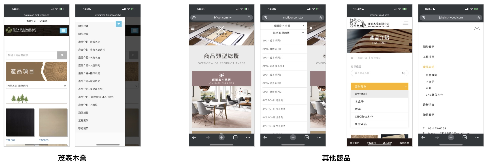
2Introduce AI recognition to speed up intake and improve data quality
With an AI timber-recognition intake flow, the system automatically categorizes products and updates the back office, cutting the time and errors of manual judgment and making intake and management smoother.
Challenges & Constraints
1. Limited timeline
We had four months to reach staging. The initial scope was fairly clear, but real testing brought many changes. To keep everyone aligned, the team held weekly scrum meetings to check requirements, discuss priorities and handle feature changes quickly.
2. Technical constraints
With limited development time, most UI components had to come from existing libraries. Back-end integration and training the AI timber-recognition model also depended on data from the client, but on-site staff were used to the old process, which slowed data collection.

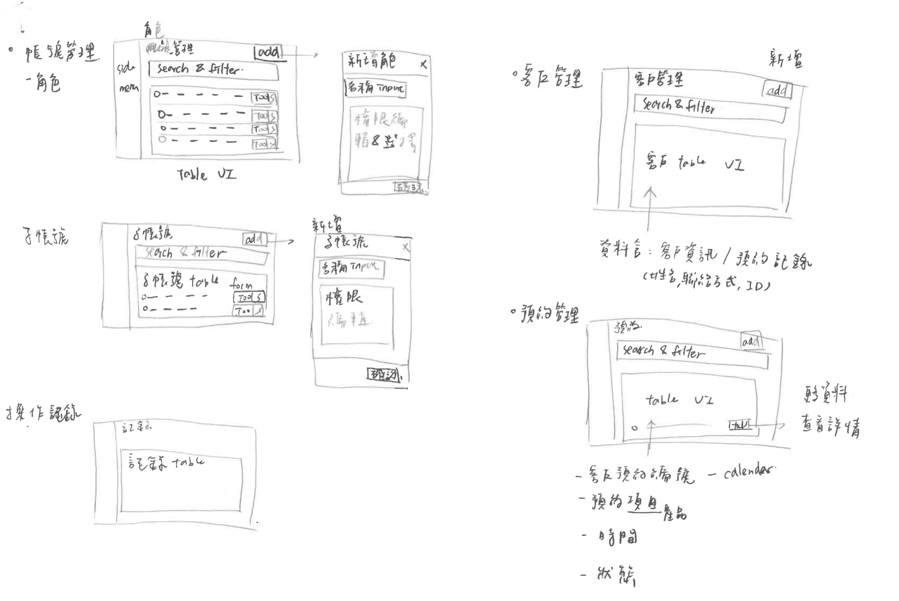
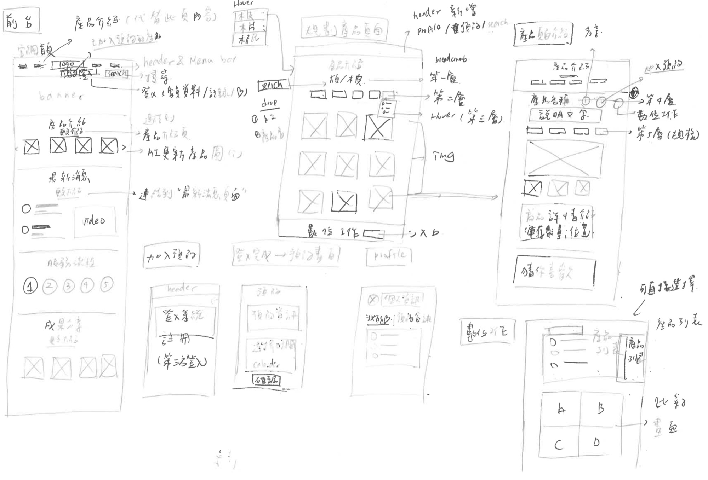
Click an image to enlarge
Once the initial direction was set, I quickly sketched wireframes and flows to align the team and client on direction and scope, and to clarify requirements before detailed design. Since the scope was large and detailed, we chose an agile approach: build the core back-office features first, release a first version for the client to test, then keep refining based on real use.
Deliverables

Before designing solutions, I built a sustainable design system — a systematic component library with a neutral, timeless style — to keep the platform consistent and make future features easier to add and maintain.
1AI Recognition Flow
To start testing early and quickly gather the data the AI model needed, the team prioritized the AI recognition system in phase one. Since intake is mostly done on phones, I designed it as a mobile web flow. After talking with the Ever Green team, we learned that every incoming shipment is logged and filed item by item, so we introduced a new flow for the next intake: staff take a photo to recognize the timber and register its data at the same time, making categorization and record-keeping more efficient.


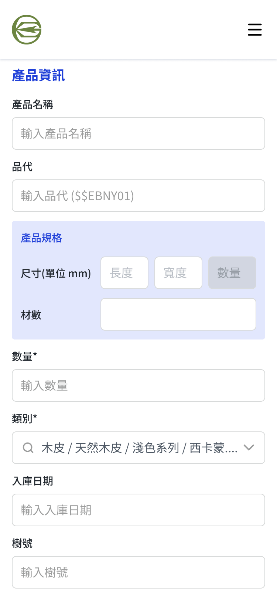
2Category Management
We reworked how timber is categorized, turning messy, inconsistent names and levels into a structure that matches how users think. Management becomes more intuitive in the back office, and customers find the right products faster. This wasn’t just tidying data — it gave search and browsing across the whole platform a clear starting point.
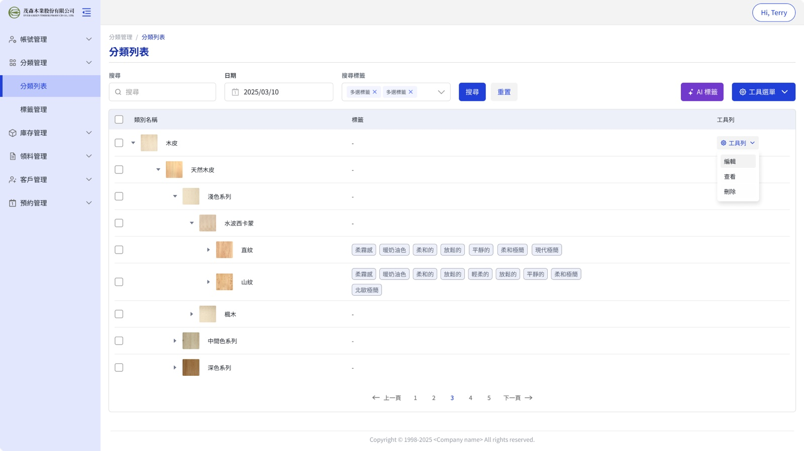
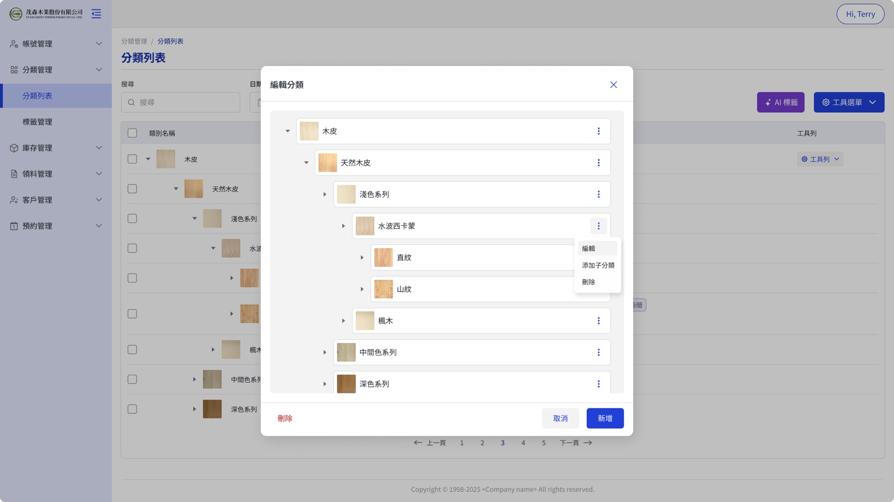
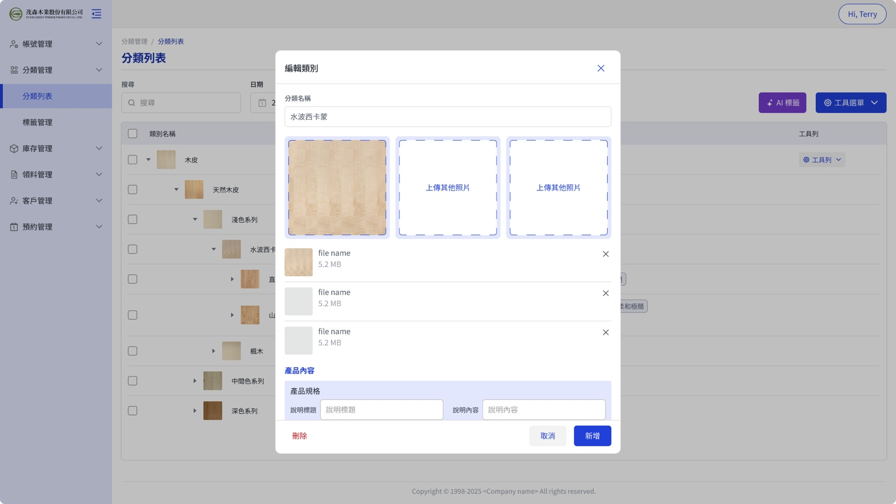

Click an image to enlarge
3Material Pick-up
On-site staff handle material pick-ups every day, but the old process relied on verbal requests, paper and experience, which led to mistakes. The new pick-up feature uses more intuitive interactions that are easy to understand, so older employees can learn it quickly. Efficiency and accuracy both improved noticeably.
Figma design link (URL needed)
4AI Tags
To make products easier for first-time users to understand, we introduced AI tags that translate product properties into descriptive adjectives that match how people feel about them. Without knowing technical categories or product codes, users can filter and search using intuitive words, quickly getting a sense of the products and exploring more efficiently.
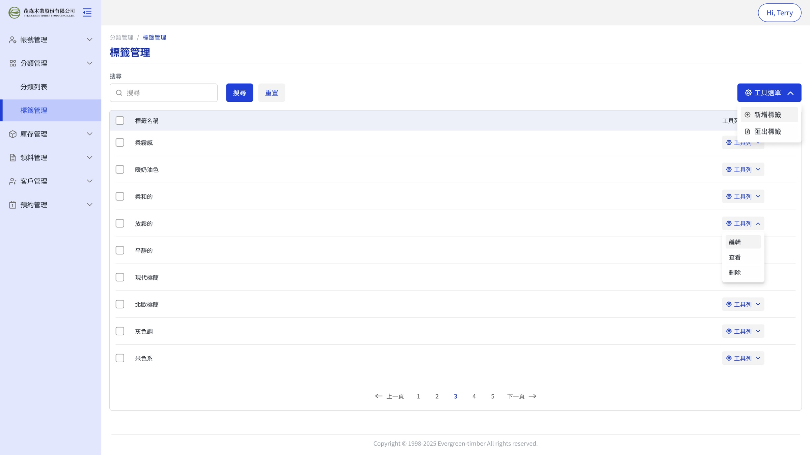
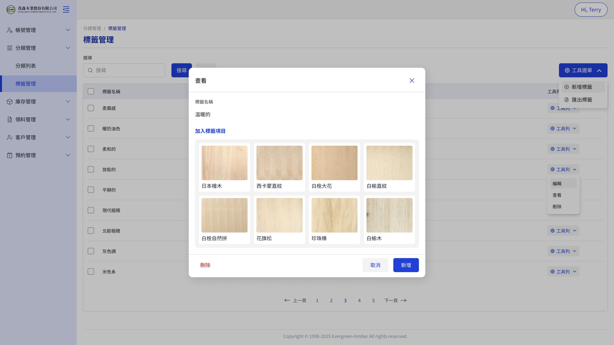
5Website
While keeping the original visual style, we reorganized the information architecture, simplified complex content and introduced clearer categories. By cutting distractions and redesigning the search flow, the website became cleaner and more focused, helping customers find timber information more easily.
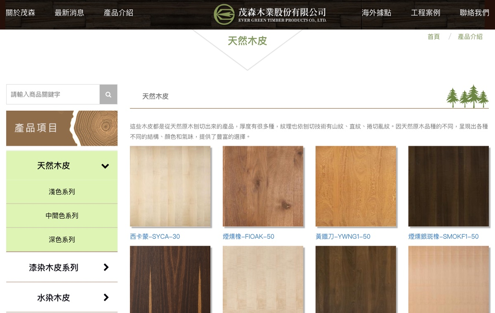

Reflection
1Understand differences in user behavior early
Midway through, we realized that the people actually using the platform included migrant workers, so we revisited the flows and adjusted the back-end data structure to fit real use. It reminded us how much it matters — for both design decisions and project efficiency — to understand early on who will use the system.
2Category Management
Under a tight timeline, we first combined category browsing and filtering into a single table, trying to serve several use cases with one interface.
But as we designed and discussed it, we realized these were two different flows that shouldn’t be handled at once. We split them into a category browsing page and a filtered results page, so users clearly understand each page before filtering. It taught me how to make design decisions that serve the user experience within limited time and development resources.